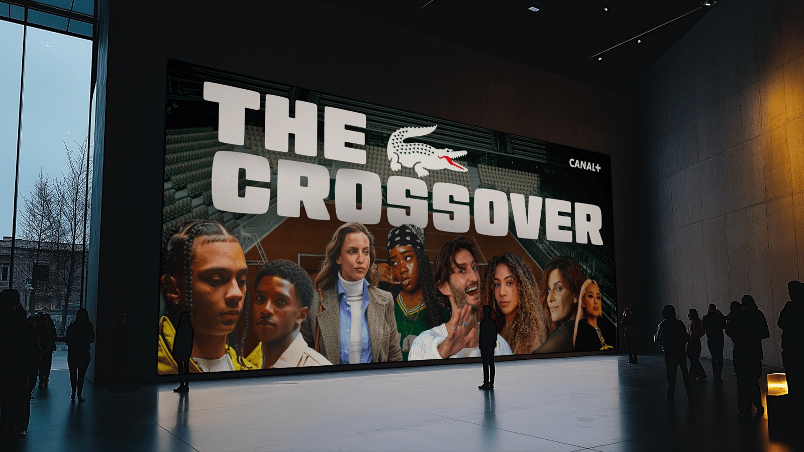
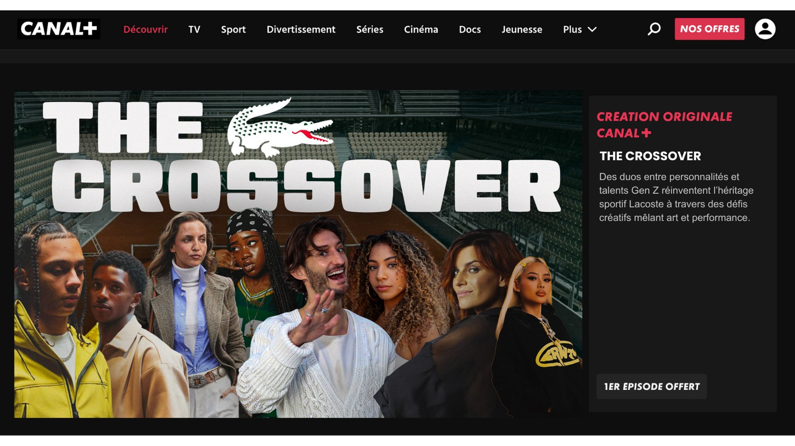
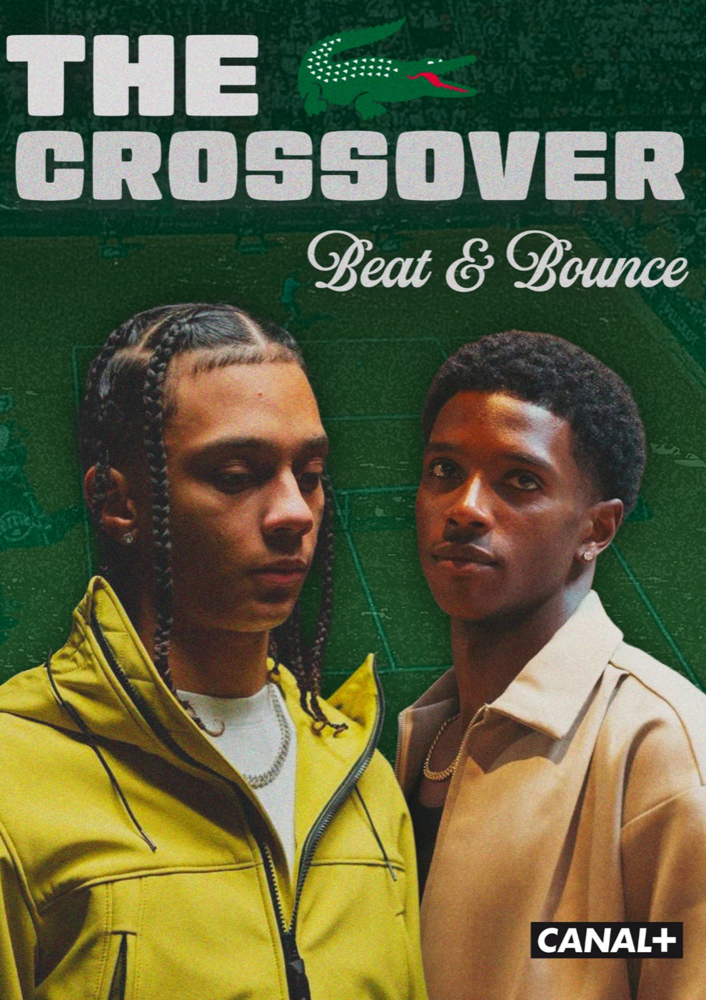
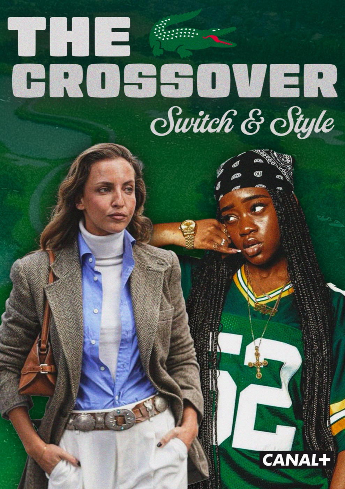
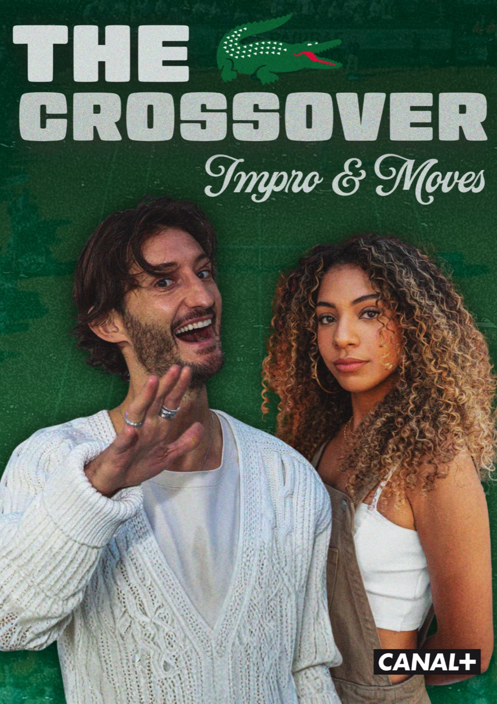
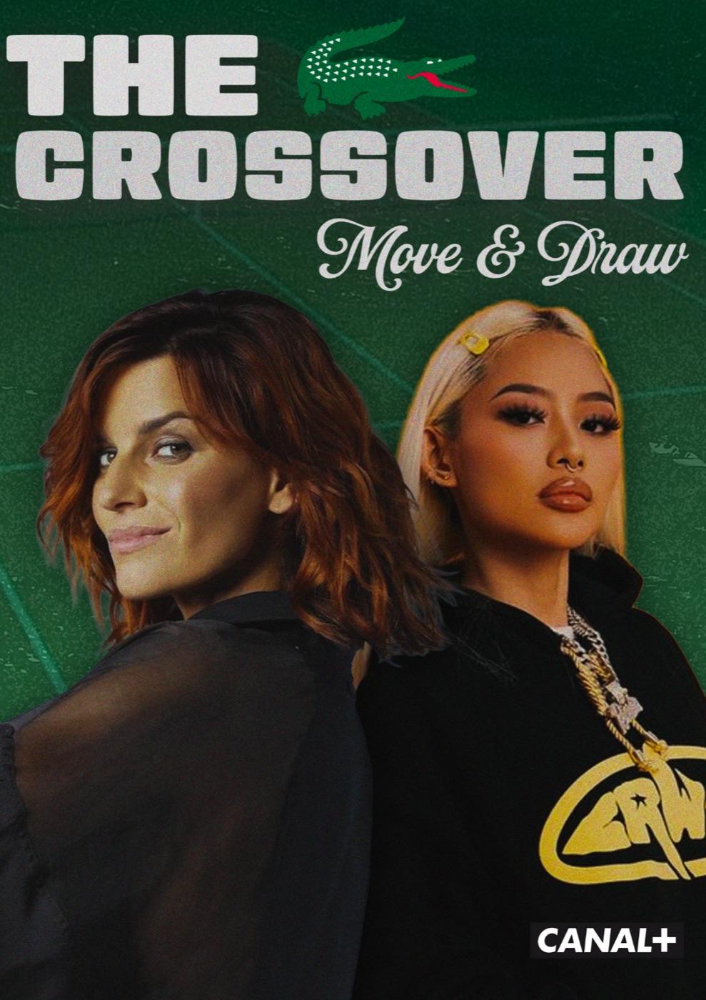

01
Projet Lacoste
Problématique : comment consolider le statut de Lacoste auprès de la gen Z, entre héritage sportif et codes contemporains ?
Le concept : avec mon groupe, nous avons imaginé une émission télévisée en quatre épisodes, qui réunit des duos formés d’une personnalité connue et d’un jeune talent de la génération Z. À chaque épisode, un défi associe l’ADN sportif de Lacoste à un univers créatif comme le théâtre, la musique ou l’art. Des affiches propres à chaque épisode seront affichées dans les abribus, le métro et la ville, pour inscrire la marque dans une culture actuelle qui parle aux jeunes.
- Contexte
- Projet fictif, ISEG Nantes
- Outils







